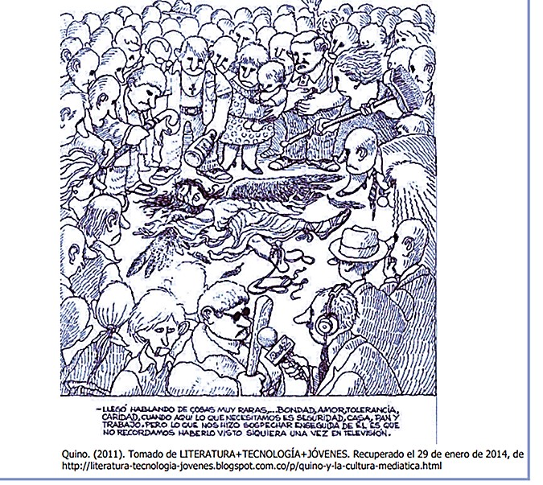
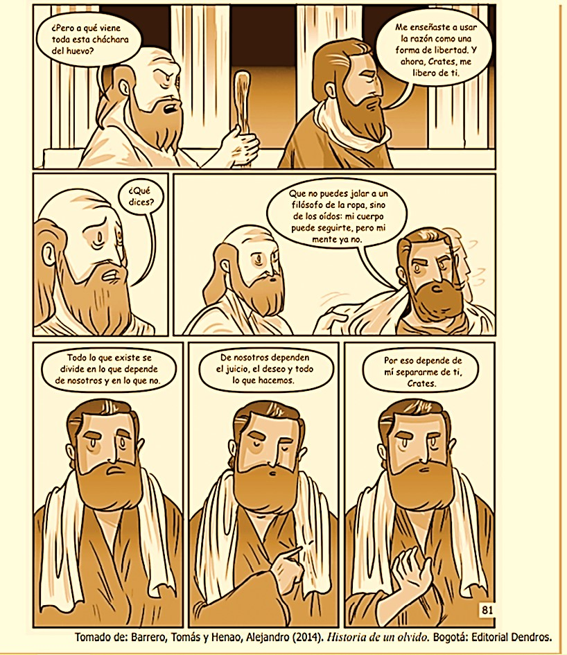
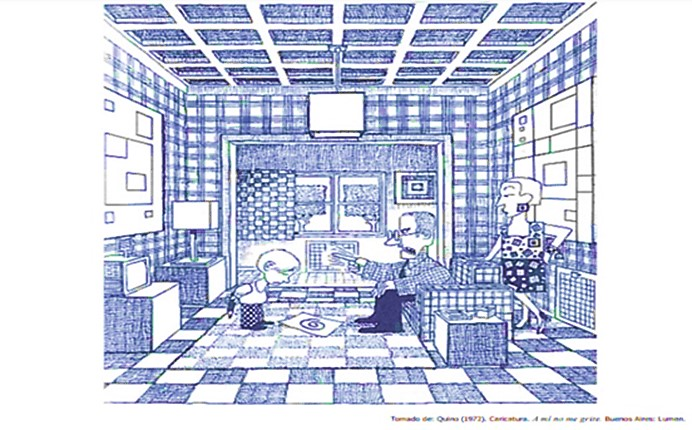

Diagnóstico Pre-test
PRUEBA DIAGNÓSTICA
LECTURA CRÍTICA
GRADO 10
RESPONDA LAS PREGUNTAS 1 Y 2 DE ACUERDO CON LA SIGUIENTE INFORMACIÓN
Si las fotografías permiten la posesión imaginaria de un pasado irreal, también ayudan a tomar posesión de un espacio donde la gente está insegura. Así, la fotografía se desarrolla en conjunción con una de las actividades modernas más características: el turismo. Por primera vez en la historia, grupos numerosos de gente abandonan sus entornos habituales por breves períodos. Parece decididamente anormal viajar por placer sin llevar una cámara. Las fotografías son la prueba irrecusable de que se hizo la excursión, se cumplió el programa, se gozó del viaje. Las fotografías documentan secuencias de consumo realizadas en ausencia de la familia, los amigos, los vecinos. Pero la dependencia de la cámara, en cuanto aparato que da realidad a las experiencias, no disminuye cuando la gente viaja más. El acto de fotografiar satisface las mismas necesidades para los cosmopolitas que acumulan trofeos fotográficos de su excursión en barco por el Nilo o sus catorce días en China, que para los turistas de clase media que hacen instantáneas de la Torre Eiffel o las cataratas del Niágara.
El acto fotográfico, un modo de certificar la experiencia, es también un modo de rechazarla: cuando se confina a la búsqueda de lo fotogénico, cuando se convierte la experiencia en una imagen, un recuerdo. El viaje se transforma en una estrategia para acumular fotos. La propia actividad fotográfica es tranquilizadora, y mitiga esa desorientación general que se suele agudizar con los viajes. La mayoría de los turistas se sienten obligados a poner la cámara entre ellos y toda cosa destacable que les sale al paso. Al no saber cómo reaccionar, hacen una foto. Así, la experiencia cobra forma: alto, una fotografía, adelante. El método seduce sobre todo a gente subyugada a una ética de trabajo implacable: alemanes, japoneses y estadounidenses. El empleo de una cámara atenúa su ansiedad provocada por la inactividad laboral cuando están en vacaciones y presuntamente divirtiéndose. Cuentan con una tarea que parece una simpática imitación del trabajo: pueden hacer fotos.
Tomado de: Sontag, S. (2009). Sobre la fotografía. Barcelona: Debolsillo.
1. En la frase “Las fotografías son la prueba irrecusable de que se hizo la excursión, se cumplió el programa, se gozó del viaje”, ¿cuál de las siguientes palabras es un sinónimo de la palabra ‘irrecusable’?
A. Inminente.
B. Concluyente.
C. Irremplazable.
D. Cuestionable.
2. Considere el siguiente resumen del texto anterior:
“La autora analiza la relación entre el turismo y la fotografía, teniendo en cuenta que los cosmopolitas ven en sus viajes al acto de fotografiar como una necesidad. Según ella, ese acto acaba por convertirse en una práctica trivial con la que solo se busca mitigar la desorientación general que causan los viajes. Así, la fotografía se convierte para los cosmopolitas japoneses, estadounidenses y alemanes en una especie de reemplazo del trabajo al que están acostumbrados”.
El anterior resumen se puede describir como inadecuado porque
A. expone ideas contrarias a las afirmaciones principales del texto.
B. se centra en un tipo particular de turistas y no en los turistas en general.
C. omite el tono irónico y burlón con que la autora se refiere al arte de la fotografía.
D. se detiene en presentar información en extremo detallada y secundaria del texto.
RESPONDA LAS PREGUNTAS 3, 4 Y 5 DE ACUERDO CON LA SIGUIENTE INFORMACIÓN
En nuestra sociedad, se tiende a pensar que el matrimonio, la base de la familia, se sostiene si hay confianza mutua y buena comunicación, así como si ambos miembros de la pareja trabajan unidos para resolver los conflictos y pasan tiempo juntos. En resumen, su piedra angular es un amor maduro y sincero. No obstante, la idea de que este deba ser la razón última del enlace es bastante reciente: aparece en el siglo XVIII y se afianza en el XIX, con el movimiento romántico. Hasta entonces, el matrimonio era ante todo una institución económica y política demasiado trascendente como para dejarla en manos de los dos individuos implicados. En general, resultaba inconcebible que semejante acuerdo se basara en algo tan irracional como el enamoramiento. De hecho, no se inventó ni para que los hombres protegieran a las mujeres ni para que las explotaran. Se trataba de una alianza entre grupos que iba más allá de los familiares más cercanos o incluso los pequeños grupos.
Para las élites, era una manera excelente de consolidar la riqueza, fusionar recursos y forjar uniones políticas. Desde la Edad Media, la dote de boda de la mujer constituía el mayor ingreso de dinero, bienes o tierras que un hombre iba a recibir en toda su vida. Para los más pobres, también suponía una transacción económica que debía ser beneficiosa para la familia. Así, se solía casar al hijo con la hija de quien tenía un campo colindante.
El matrimonio se convirtió en la estructura que garantizaba la supervivencia de la familia extendida, que incluye abuelos, hermanos, sobrinos… Al contrario de lo que solemos creer, la imagen del marido trabajando fuera de la casa y la mujer haciéndose cargo de la misma es un producto reciente, de los años 50.
Hasta entonces, la familia no se sostenía con un único proveedor, sino que todos sus integrantes contribuían al único negocio de la que esta dependía.
Que el matrimonio no se basara en el amor no quiere decir que las personas no se enamoraran. Sin embargo, en algunas culturas se trata de algo incompatible con el matrimonio. En la China tradicional, por ejemplo, una atracción excesiva entre los esposos era tenida como una amenaza al respeto y solidaridad debida a la familia. Es más, en tal ambiente, la palabra amor solo se aplicaba para describir las relaciones ilícitas. Fue en la década de 1920 cuando se inventó un término para designar el cariño entre cónyuges. Una idea tan radicalmente nueva exigía un vocabulario especial.
Aún hoy, muchas sociedades desaprueban la idea de que el amor sea el centro del matrimonio. Es el caso de los fulbes africanos, del norte de Camerún. “Muchas de sus mujeres niegan vehementemente cualquier apego hacia el marido”, asegura Helen A. Regis, del Departamento de Geografía y Antropología de la Universidad Estatal de Luisiana. Otras, en cambio, aprueban el amor entre esposos, pero nunca antes de que el matrimonio haya cumplido su objetivo primordial.
Adaptado de: Sabadell, Miguel Ángel (2013). “Líos de familias”. En: Muy Interesante, No. 384, pp. 72-76.
3. La función del conector “sin embargo” del penúltimo párrafo es
A. introducir un nuevo tema de reflexión.
B. negar información suministrada previamente.
C. agregar nuevos detalles acerca de lo dicho anteriormente.
D. contrastar la información anterior sin llegar a invalidarla.
4. La palabra “dote” del segundo párrafo puede reemplazarse, sin que la frase pierda su significado, por
A. ahorros de la futura esposa
B. dinero de los familiares
C. aporte patrimonial
D. ceremonia matrimonial
5. De acuerdo con el texto, ¿qué se puede concluir acerca del matrimonio?
A. Que es una institución que tiene únicamente propósitos económicos y políticos.
B. Que es la base de la familia en culturas tan diversas y complejas como las nuestras.
C. Que es una institución que varía dependiendo del contexto histórico y social.
D. Que es un pacto entre dos individuos que debe basarse en el amor y la confianza.
RESPONDA LA PREGUNTA 6 DE ACUERDO CON LA SIGUIENTE INFORMACIÓN

6. ¿Cuál de los siguientes enunciados describe mejor la caricatura?
A. El pueblo hace justicia por su propia mano.
B. El linchamiento de un ángel.
C. Entrevista con un asesino.
D. Un ángel bajó del cielo.
RESPONDA LAS PREGUNTAS 7 y 8 DE ACUERDO CON LA SIGUIENTE INFORMACIÓN
1984 es una novela futurista que tiene lugar en una sociedad totalitaria. Los ciudadanos de esta sociedad son controlados por una figura omnipresente conocida como el Gran Hermano. En el siguiente apartado, un miembro defensor del orden le explica al protagonista el principal propósito del régimen.
No habrá lealtad; no existirá más fidelidad que la que se debe al Partido, ni más amor que el amor al Gran Hermano. No habrá risa, excepto la risa triunfal cuando se derrota a un enemigo. No habrá arte, ni literatura, ni ciencia. No habrá ya distinción entre la belleza y la fealdad. Todos los placeres serán destruidos. Pero siempre, no lo olvides, Winston, siempre habrá el afán de poder, la sed de dominio, que aumentará constantemente y se hará cada vez más sutil.
Siempre existirá la emoción de la victoria, la sensación de pisotear a un enemigo indefenso. Si quieres hacerte una idea de cómo será el futuro, figúrate una bota aplastando un rostro humano... incesantemente.
Tomado de: Orwell, George. 1984. Barcelona: Ediciones Destino. 2008.
7. ¿Cuál de las siguientes afirmaciones es incompatible con las políticas del Partido?
A. El pueblo debe mantenerse unido.
B. La individualidad debe ser eliminada.
C. El poder está en ser fiel a uno mismo.
D. Un pueblo ignorante es más poderoso.
8. La frase “figúrate una bota aplastando un rostro humano…incesantemente”
A. explica los planes para el futuro del régimen.
B. ejemplifica las ideas transmitidas al pueblo.
C. expone el verdadero propósito del sistema de gobierno.
D. ilustra las condiciones de los ciudadanos bajo el régimen.
RESPONDA LA PREGUNTA 9 DE ACUERDO CON LA SIGUIENTE INFORMACIÓN
9. ¿Cuál de los siguientes enunciados se contradice con la tesis central del texto?

A. No todo se divide entre lo que depende y lo que no depende de nosotros.
B. Alejarnos de alguien no depende de nosotros mismos.
C. La mente de un filósofo funciona de la misma manera que su cuerpo.
D. El juicio y el deseo no dependen de nosotros.
RESPONDA LA PREGUNTA 10 DE ACUERDO CON LA SIGUIENTE INFORMACIÓN

10 ¿En cuál de los siguientes contextos se inscribe mejor la caricatura?
A. Anuncio publicitario.
B. Reportaje gráfico.
C. Humor gráfico.
D. Sátira política.